8 Time Series

Time series data are widely used in the financial sector for obvious reasons, and these methods can be very useful environmental data science especially in studies such as looking at long-term climate change variables such as the Mauna Loa CO2 data above, or at the much finer temporal scale, environmental data from data loggers such as eddy covariance flux towers.
 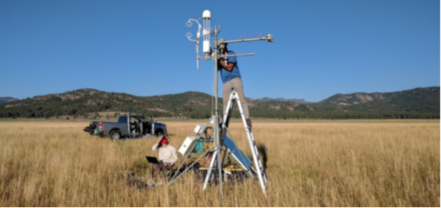
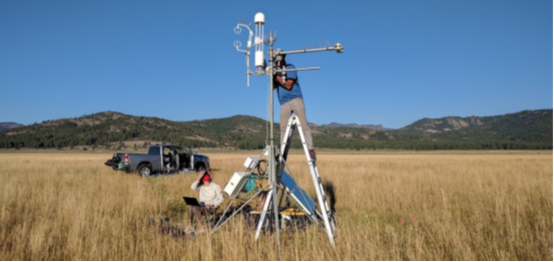
8.1 Creation of time series (ts) data
A time series (ts) is created with the ts() function.
- the time unit can be anything – not actually saved with the ts
- observations must be a regularly spaced series
library(tidyverse)
SFhighF <- c(58,61,62,63,64,67,67,68,71,70,64,58)
SFlowF <- c(47,48,49,50,51,53,54,55,56,55,51,47)
SFhighC <- (SFhighF-32)*5/9
SFlowC <- (SFlowF-32)*5/9
SFtempC <- bind_cols(high=SFhighC,low=SFlowC)
plot(SFtempC); plot(ts(SFtempC))

8.1.1 frequency setting
Frequency setting is a key parameter for ts()
- sets how many observations per time unit
- ts() mostly doesn’t seem to care what the time unit is, however some functions figure it out, at least for an annual time unit, e.g. that 1-12 means months when there’s a frequency of 12


frequency < 1
If you have data of lower frequency than 1 per unit
- e.g. greenhouse gas data values every 20 years, starting in year 20, frequency 1/20 = 0.05
library(dslabs)
data("greenhouse_gases")
GHGwide <- pivot_wider(greenhouse_gases, names_from = gas,
values_from = concentration)
GHG <- ts(GHGwide, frequency=0.05, start=20)
plot(GHG)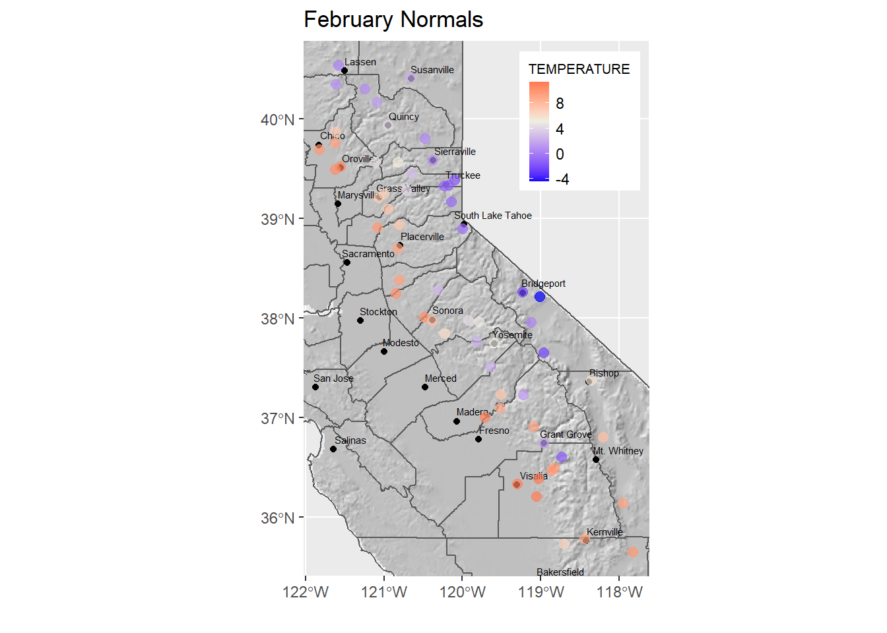
start and end parameters
- the time of the first (start) and last (end) observations. Either a single number or a vector of two numbers (the second of which is an integer), which specify a natural time unit and a (1-based) number of samples into the time unit.
- Example with year as the time unit and monthly data, starting July 2019 and ending June 2020:
frequency=12, start=c(2019,7), end=c(2020,6)
8.1.2 Data logger data from Marble Mountains resurgence
[Marbles]
For a study of chemical water quality and hydrology of a karst system in the Marble Mountains of California, a spring resurgence was instrumented to measure water level, temperature, and specific conductance (a surrogate for total dissolved solids) over a 4-year period.


 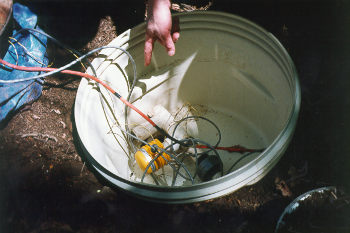
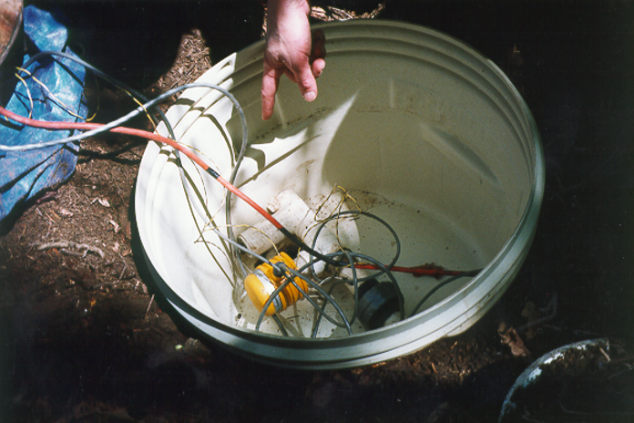


library(tidyverse); library(lubridate)
resurg <- read_csv(system.file("extdata","resurgenceData.csv",package="iGIScData")) %>%
mutate(date_time = mdy_hms(paste(date, time))) %>%
dplyr::select(date_time, ATemp, BTemp, wlevelm, EC, InputV)
resurgTS <- ts(resurg, frequency = 12*365, start = c(1994, 266*12+7))
plot(resurgTS)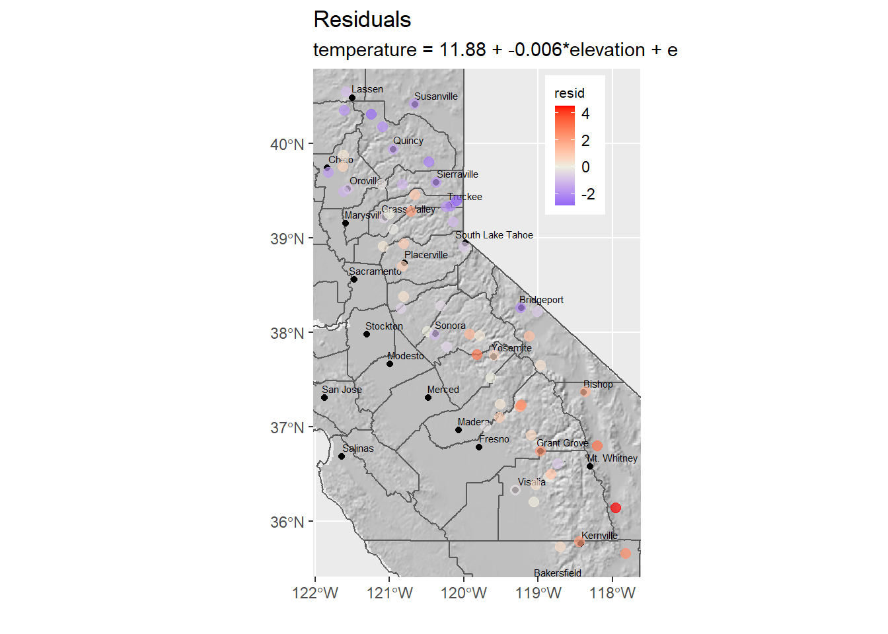
8.2 Data smoothing methods
8.2.1 moving average (ma)
- Simple generalization of sequential data
- The order parameter is how many values are averaged in the moving window
- should be an odd number
## high low
## Jan 1 14.44444 8.333333
## Feb 1 16.11111 8.888889
## Mar 1 16.66667 9.444444
## Apr 1 17.22222 10.000000
## May 1 17.77778 10.555556
## Jun 1 19.44444 11.666667
## Jul 1 19.44444 12.222222
## Aug 1 20.00000 12.777778
## Sep 1 21.66667 13.333333
## Oct 1 21.11111 12.777778
## Nov 1 17.77778 10.555556
## Dec 1 14.44444 8.333333## [,1] [,2]
## Jan 1 NA NA
## Feb 1 15.74074 8.888889
## Mar 1 16.66667 9.444444
## Apr 1 17.22222 10.000000
## May 1 18.14815 10.740741
## Jun 1 18.88889 11.481481
## Jul 1 19.62963 12.222222
## Aug 1 20.37037 12.777778
## Sep 1 20.92593 12.962963
## Oct 1 20.18519 12.222222
## Nov 1 17.77778 10.555556
## Dec 1 NA NAmoving average of CO2 data
Difference shows time-local fluctuations, a component of the data
library(dslabs)
data("greenhouse_gases")
GHGwide <- pivot_wider(greenhouse_gases,
names_from = gas,
values_from = concentration)
CO2 <- ts(GHGwide$CO2,
frequency = 0.05)
library(forecast)
CO2ma <- ma(CO2, order=7)
plot(CO2)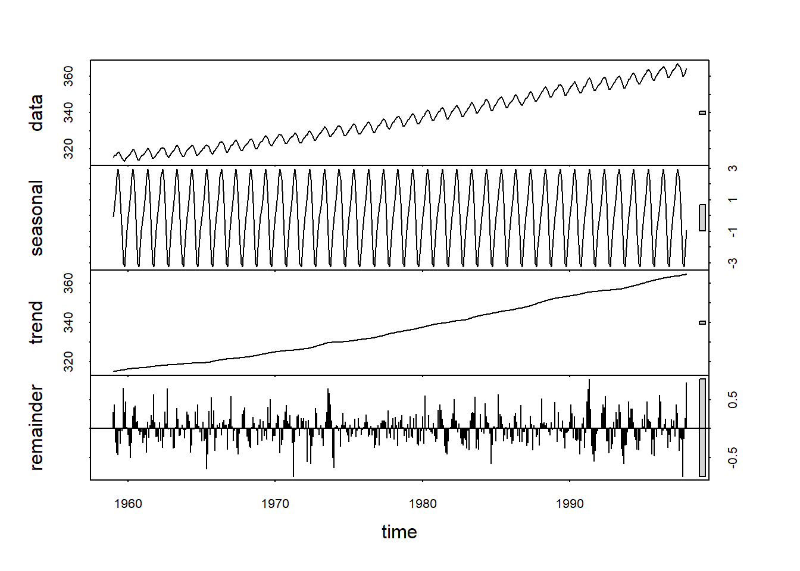
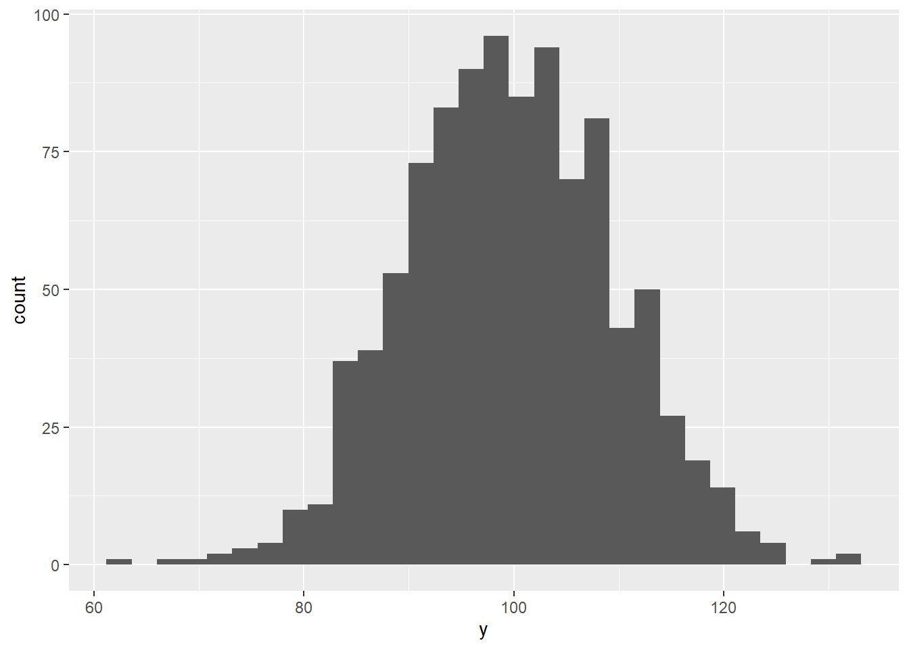
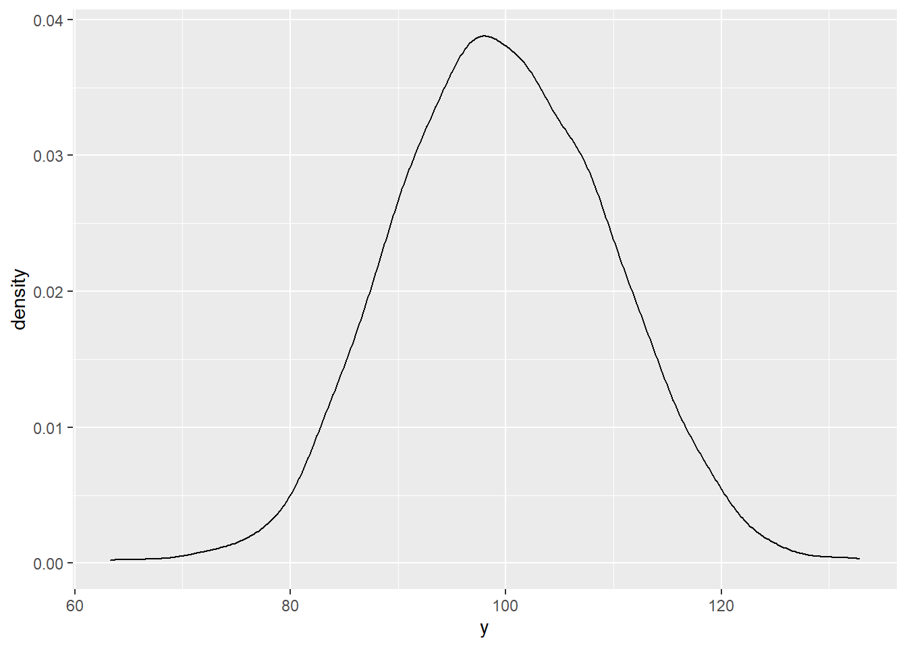
8.2.2 loess (local regression) smoothing
[place holder – need to work out]
From:
https://www.rdocumentation.org/packages/stats/versions/3.6.2/topics/loess
Local Polynomial Regression Fitting
- Fit a polynomial surface determined by one or more numerical predictors, using local fitting.
From:
http://r-statistics.co/Loess-Regression-With-R.html
a non-parametric approach that fits regressions within local neighborhoods
- if X variables are bound within a range [?]
8.3 Decomposing time series
: separating a time series into its constituent components.
- original data
- trend component, removes seasonal and remainder
- if seasonal, also a seasonal component. Note that season relates to the time unit. If 1 year, “seasonality” refers to the normal usage of seasons over a year. But if 1 day, seasons refers to different parts of a day, etc.
- irregular “random” remainder (time-local variation)
There are two common decomposition methods, the classic method decompose using moving averages, which we’ll look
at first, then the “loess” method used by stl.
Mauna Loa CO2 data with seasonality
A good place to see the effect of seasonality is to look at the Mauna Loa CO2 data, which shows regular annual cycles, yet with a regularly increasing trend over the years. The decomposition shows the original observations, followed by a trend line that removes the seasonal and local (short-term) random irregularities, a detrended seasonal picture which removes that trend to just show the seasonal cycles, followed by the random irregularities. Note the vertical scale: the units are all the same – parts per million – so the actual amplitude of the seasonal cycle should be the same as the annual amplitude of the observations, it’s just scaled to the chart height, which tends to exaggerate the seasonal cycles and random irregularities.
Figure 8.1: Decomposition of Mauna Loa monthly co2 time series (in base) extending from 1959 to 1981
Seasonal decomposition using loess
The stl function stands for “Seasonal decomposition of Time series by Loess”.
Loess is a smoothing algorithm, that wor. If s.window = “periodic” the mean is used for smoothing;
the seasonal values are removed and the remainder smoothed to find the trend.
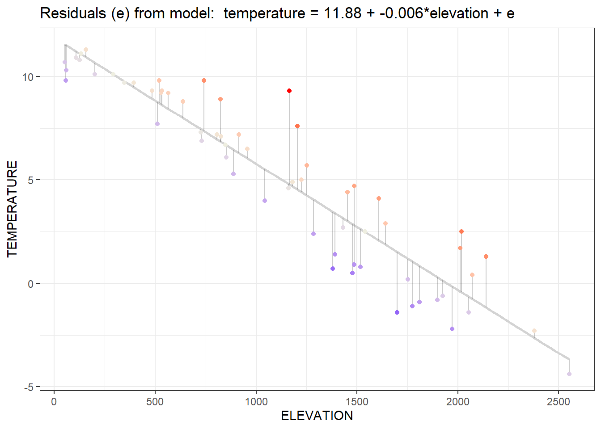
Marble Mountains karst resurgence study
[Marbles]
In the Marble Mountains karst resurgence study, water level water level has an annual seasonality that might be best understand by decomposition.
library(tidyverse); library(lubridate)
resurg <- read_csv(system.file("extdata","resurgenceData.csv",package="iGIScData")) %>%
mutate(date_time = mdy_hms(paste(date, time))) %>%
dplyr::select(date_time, ATemp, BTemp, wlevelm, EC, InputV)
wlevelm <- ts(resurg$wlevelm, frequency = 12*365,
start = c(1994, 266*12+7))
fit <- stl(wlevelm, s.window="periodic")
plot(fit)
8.3.1 lag regression
[SolarRad_Temp]
library(readxl)
BugacSolstice <- read_xls(system.file("extdata", "SolarRad_Temp.xls", package="iGIScData"),
sheet="BugacHungary", col_types = "numeric") %>%
filter(Year != "YYYY" & `Day of Yr` < 177 & `Day of Yr` > 168) %>%
dplyr::select(SolarRad, Tair)
BugacSolsticeTS <- ts(BugacSolstice, frequency = 48)
plot(BugacSolstice, main="a simple scatter plot that illustrates hysteresis"); plot(BugacSolsticeTS)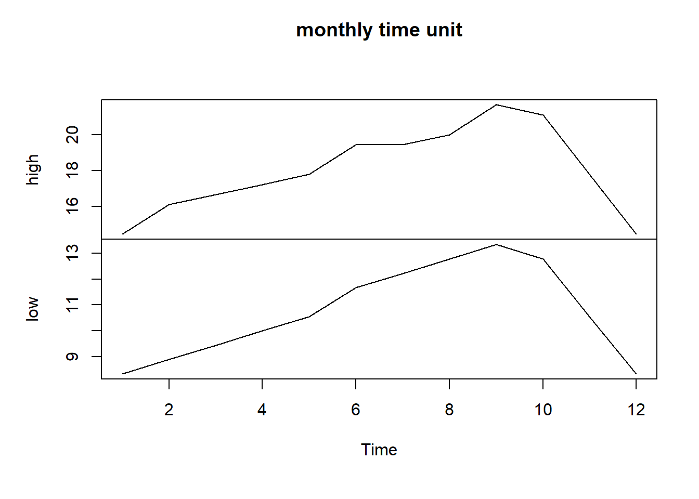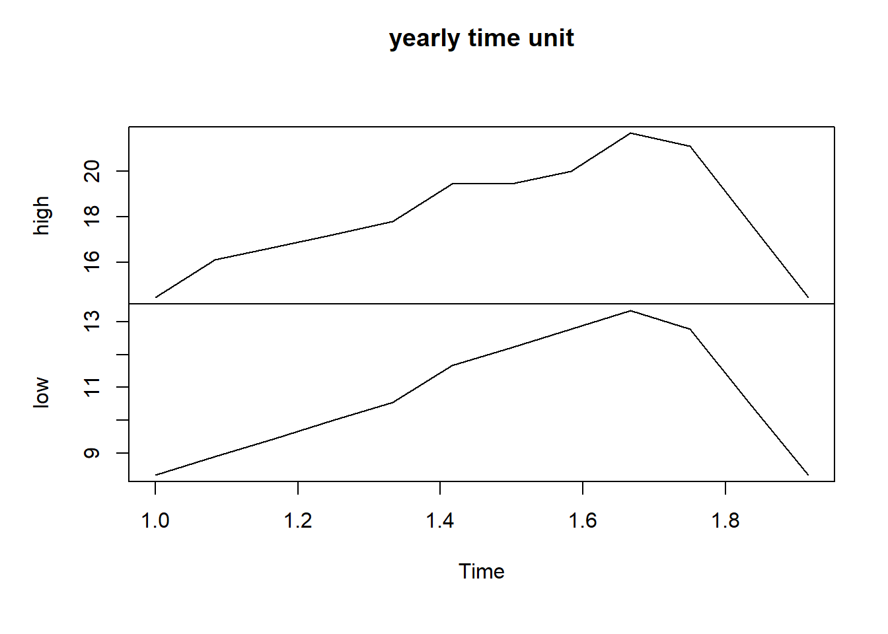
mod <- function(i) {sqrt(sum(lm(Tair~lag(SolarRad,i), data=BugacSolsticeTS)$resid**2))}
for(i in 0:5){print(paste(i,":",mod(i),sep=""))}## [1] "0:64.0135215060866"
## [1] "1:55.8980329398225"
## [1] "2:50.4934737943067"
## [1] "3:48.1321353382658"
## [1] "4:49.6489246846601"
## [1] "5:54.3634439433188"SolarRad_comp <- decompose(ts(BugacSolstice$SolarRad, frequency = 48))
Tair_comp <- decompose(ts(BugacSolstice$Tair, frequency = 48))
seasonals <- bind_cols(Rad = SolarRad_comp$seasonal, Temp = Tair_comp$seasonal)
ggplot(seasonals) +
geom_line(aes(x=seq_along(Rad), y=Rad/50), col="red", size=1) +
geom_line(aes(x=seq_along(Temp), y=Temp), col="darkgreen",size=1) +
scale_x_continuous(breaks = seq(0,480,12))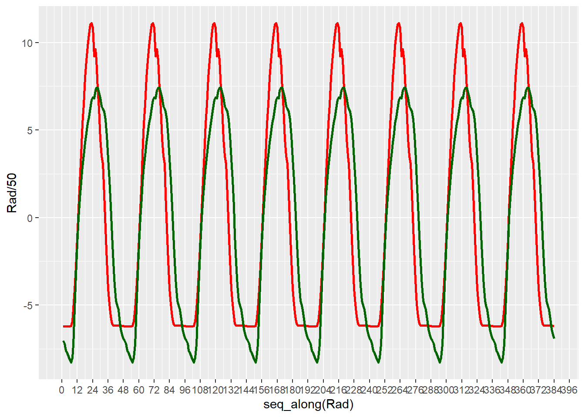
## [1] 23## [1] 28library(readxl)
ManausSolstice <- read_xls(system.file("extdata", "SolarRad_Temp.xls", package="iGIScData"),
sheet="ManausBrazil", col_types = "numeric") %>%
filter(Year != "YYYY" & `Day of Yr` < 177 & `Day of Yr` > 168) %>%
dplyr::select(SolarRad, Tair)
ManausSolsticeTS <- ts(ManausSolstice, frequency = 48)
plot(ManausSolstice, main="Manaus Brazil"); plot(ManausSolsticeTS)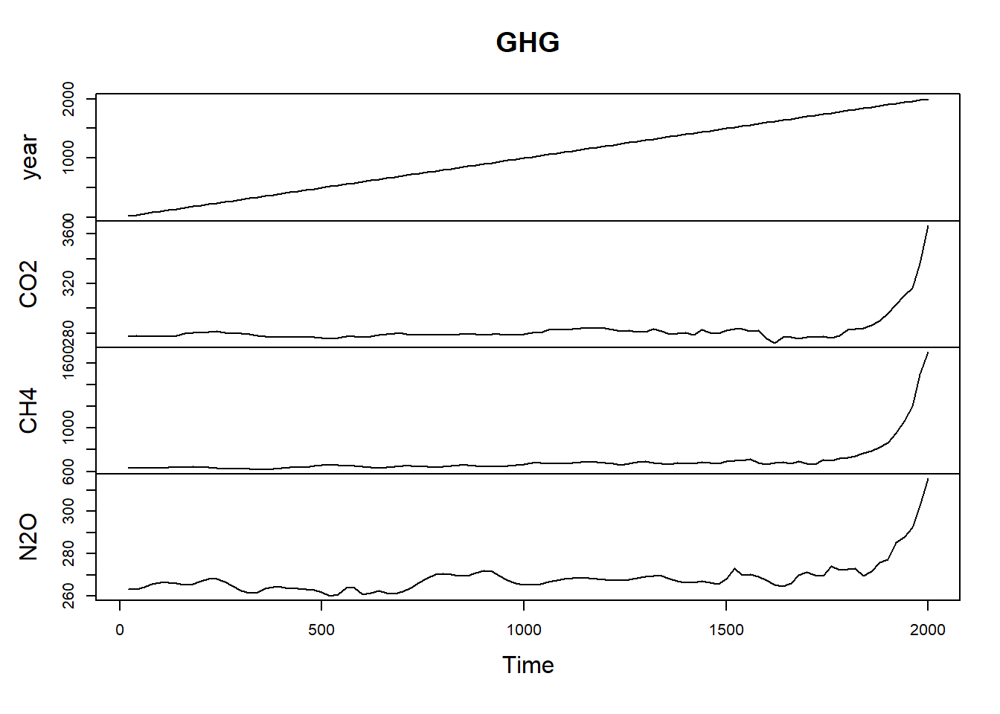
mod <- function(i) {sqrt(sum(lm(Tair~lag(SolarRad,i), data=ManausSolsticeTS)$resid**2))}
for(i in 0:5){print(paste(i,":",mod(i),sep=""))}## [1] "0:36.6765871805181"
## [1] "1:33.572327106606"
## [1] "2:31.9789648893589"
## [1] "3:31.2029493549955"
## [1] "4:31.6171985286944"
## [1] "5:32.6933416047147"SolarRad_comp <- decompose(ts(ManausSolstice$SolarRad, frequency = 48))
Tair_comp <- decompose(ts(ManausSolstice$Tair, frequency = 48))
seasonals <- bind_cols(Rad = SolarRad_comp$seasonal, Temp = Tair_comp$seasonal)
ggplot(seasonals) +
geom_line(aes(x=seq_along(Rad), y=Rad/50), col="red", size=1) +
geom_line(aes(x=seq_along(Temp), y=Temp), col="darkgreen",size=1) +
scale_x_continuous(breaks = seq(0,480,12))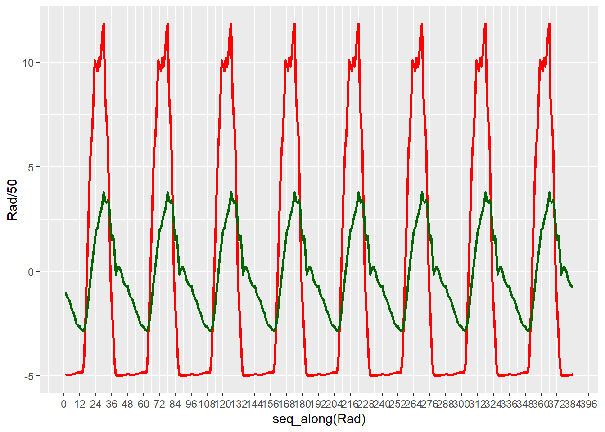
## [1] 30## [1] 308.3.2 Ensemble Average
For any time series data with meaningful time units like days or years (or even weeks when the data varies by days of the week – this was the case with COVID-19 data), ensemble averages are a good way to visualize changes in a variable over that time unit.
As you could see from the decomposition and sequential graphics we created for the Bugac and Manaus solar radiation and temperature data, looking at what happens over one day as an “ensemble” of all of the days – where the mean value is displayed along with error bars based on standard deviations of the distribution – might be a useful figure.
library(cowplot)
Manaus <- read_xls(system.file("extdata","SolarRad_Temp.xls",package="iGIScData"),
sheet="ManausBrazil", col_types = "numeric") %>%
dplyr::select(Year:Tair) %>% filter(Year != "YYYY")
ManausSum <- Manaus %>% group_by(Hr) %>%
summarize(meanRad = mean(SolarRad), meanTemp = mean(Tair),
sdRad = sd(SolarRad), sdTemp = sd(Tair))
px <- ManausSum %>% ggplot(aes(x=Hr)) + scale_x_continuous(breaks=seq(0,24,3))
p1 <- px + geom_line(aes(y=meanRad), col="blue") +
geom_errorbar(aes(ymax = meanRad + sdRad, ymin = meanRad - sdRad)) +
ggtitle("Manaus 2005 ensemble solar radiation")
p2 <- px + geom_line(aes(y=meanTemp),col="red") +
geom_errorbar(aes(ymax=meanTemp+sdTemp, ymin=meanTemp-sdTemp)) +
ggtitle("Manaus 2005 ensemble air temperature")
plot_grid(plotlist=list(p1,p2), ncol=1, align='v') # from cowplot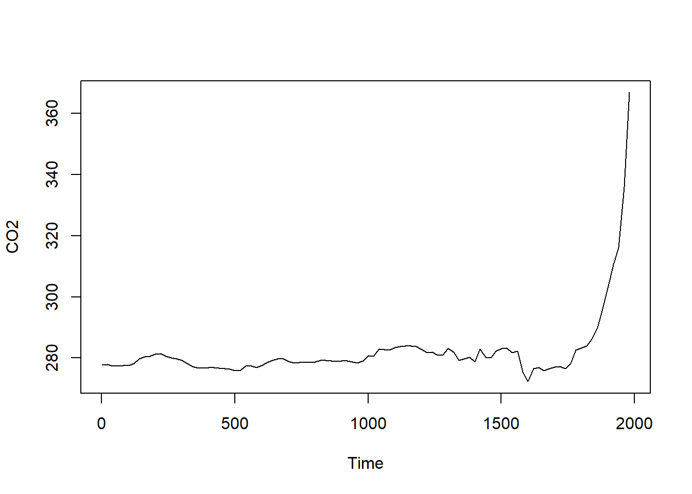
Bugac <- read_xls(system.file("extdata","SolarRad_Temp.xls",package="iGIScData"),
sheet="BugacHungary", col_types = "numeric") %>%
dplyr::select(Year:Tair) %>% filter(Year != "YYYY")
BugacSum <- Bugac %>% group_by(Hr) %>%
summarize(meanRad = mean(SolarRad), meanTemp = mean(Tair),
sdRad = sd(SolarRad), sdTemp = sd(Tair))
px <- BugacSum %>% ggplot(aes(x=Hr)) + scale_x_continuous(breaks=seq(0,24,3))
p1 <- px + geom_line(aes(y=meanRad), col="blue") +
geom_errorbar(aes(ymax = meanRad + sdRad, ymin = meanRad - sdRad)) +
ggtitle("Bugac 2005 ensemble solar radiation")
p2 <- px + geom_line(aes(y=meanTemp),col="red") +
geom_errorbar(aes(ymax=meanTemp+sdTemp, ymin=meanTemp-sdTemp)) +
ggtitle("Bugac 2005 ensemble air temperature")
plot_grid(plotlist=list(p1,p2), ncol=1, align='v') # from cowplot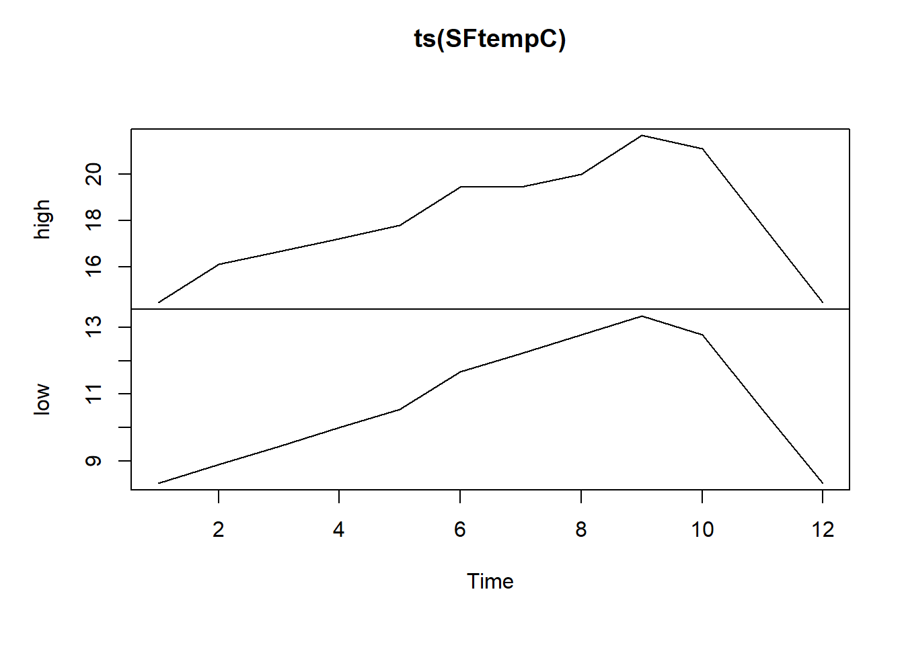
8.3.3 Julian Dates
Julian dates are the number of days since some start date
- The origin (Julian date 0) can be arbitrary
- Default for julian() is 1970-01-01
For climatological work where the year is very important, it usually means the number of days of any given year
- lubridate’s yday() gives you this.
- same thing as setting the origin for julian() as the 12-31 of the previous year.
- Useful in time series when the year is the time unit and observations are by days of the year (e.g. for climate data)
## [1] 18262
## attr(,"origin")
## [1] "1970-01-01"## [1] 0
## attr(,"origin")
## [1] "1970-01-01"## [1] 1## [1] 1
## attr(,"origin")
## [1] "2019-12-31"To create a decimal yday including fractional days, here’s a function:
ydayDec <- function(d) {
yday(d)-1 + hour(d)/24 + minute(d)/1440 + second(d)/86400}8.4 Learning more about time series in R
It can be confusing, partly because of the major use of time series in the financial sector, so a search gets you quickly into the monetizing world…
One good source is actually at CRAN: https://cran.r-project.org/web/views/TimeSeries.html
Time series data library: https://pkg.yangzhuoranyang.com/tsdl/
Understanding time series in R: https://a-little-book-of-r-for-time-series.readthedocs.io/